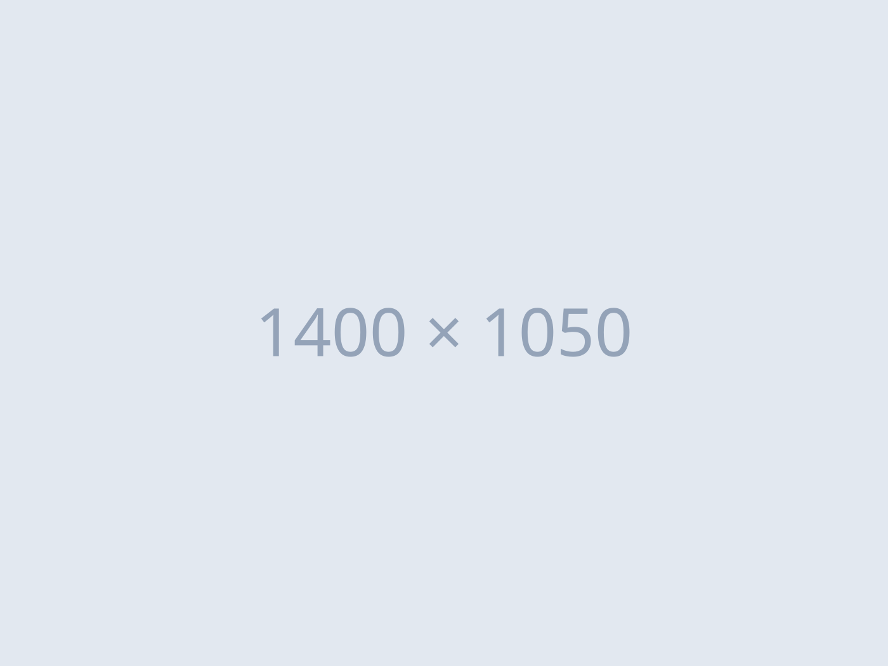
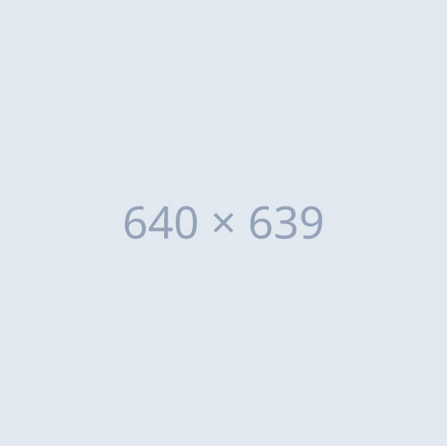
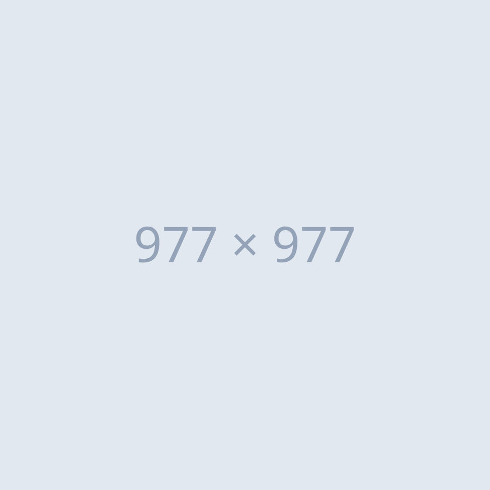
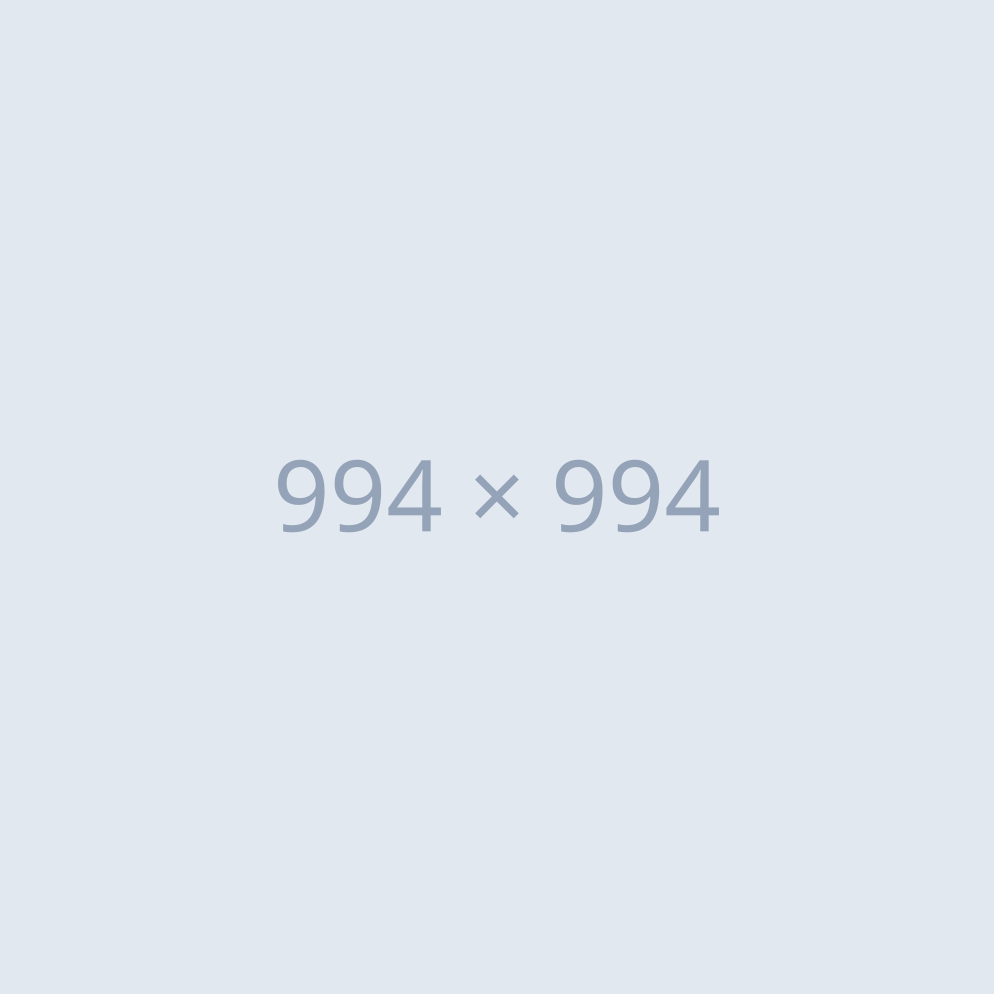
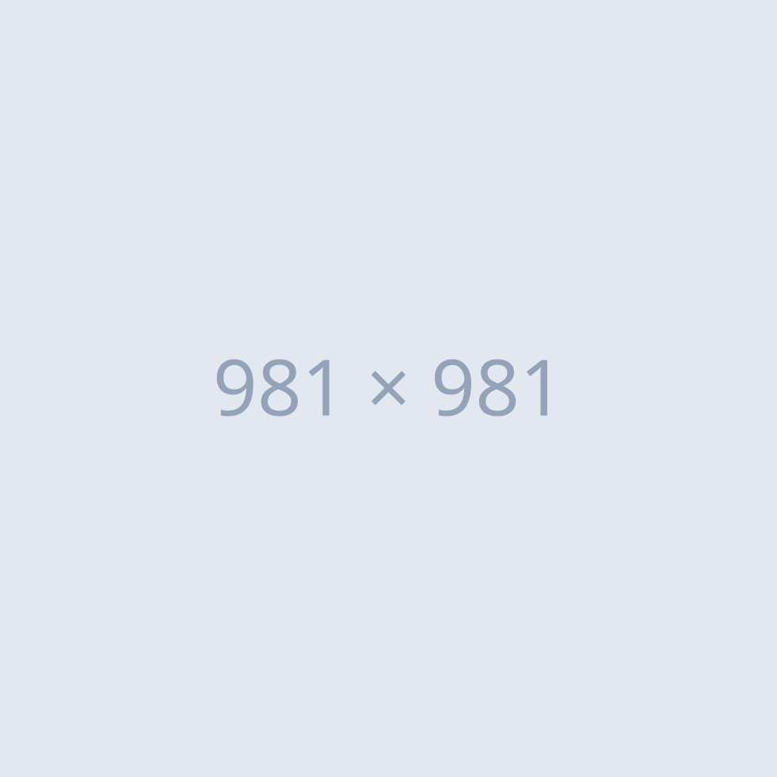
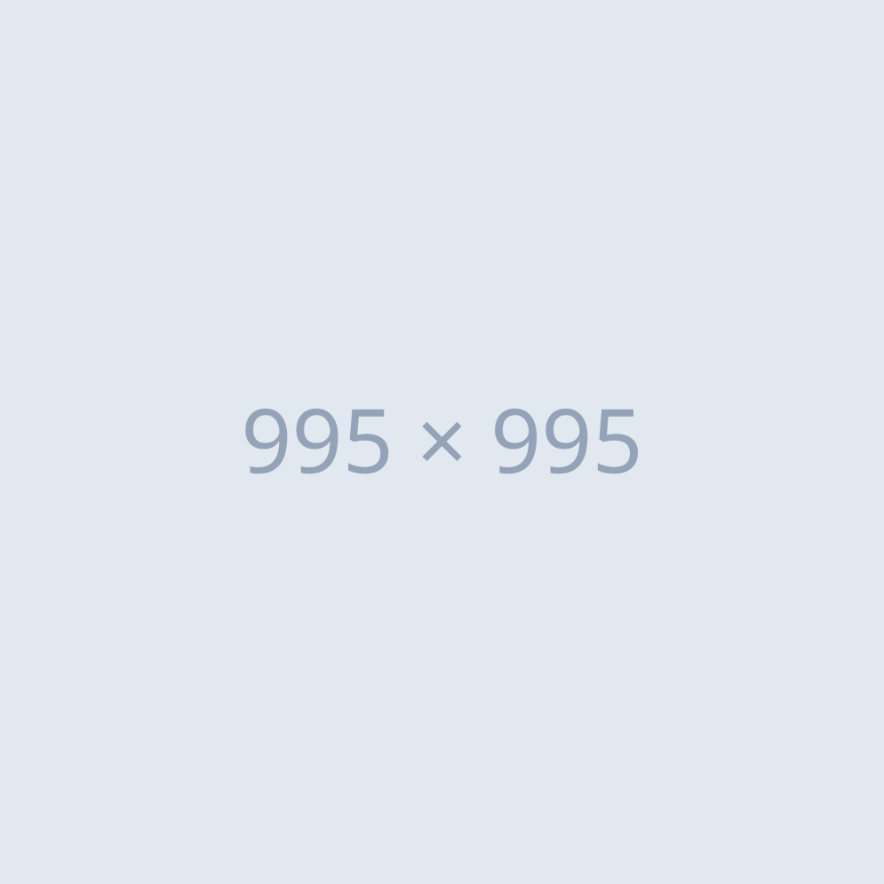

Letter No. 214 Home
The kitchen table is the only office I need
Why I gave the desk away, what lives in the one drawer, and the 7 a.m. hour that pays for the whole day.
8 min readElin Fairlie
 Hi, I’m Elin — this is my Sunday letter.
Hi, I’m Elin — this is my Sunday letter.

mornings,
Letter No. 214 Home
Why I gave the desk away, what lives in the one drawer, and the 7 a.m. hour that pays for the whole day.
8 min readElin Fairlie
Also New

Recipes · 4 min read
Small Trips · 6 min read
Topics

46 posts
52 posts

61 posts
33 posts
22 posts
Start Here
The letters readers forward most, and the best way to see what this place is about.

01Home & Small Spaces · 9 min read
One sofa, no coffee table and a rule about the floor. The flat has not grown; it just stopped arguing with me.
02Slow Mornings · 5 min read
Kettle, window, one page of a book, no phone. It sounds smug written down; it is the only habit that ever stuck.
03Recipes · 7 min read
Twenty-two jars, four bottles and a tin of anchovies: what I keep in so dinner never needs a shop on the way home.
The Notebook
Home · Mar 7, 2027
Napkins, tea towels and the good tablecloth, in a drawer you can close with one hand.
5 min read
Slow Mornings · Feb 28, 2027
Mint, chives and a stubborn bay. Six winters of trial and quite a lot of error.
4 min read
Small Trips · Feb 21, 2027
Three days, two bakeries a day and a rented bike with a basket that rattled.
8 min read
Home · Feb 14, 2027
Three lamps, one candle and a rule: nothing above eye level after eight.
6 min read

Recipes · Feb 7, 2027
Pink stalks in February feel like cheating. Here is how to cheat well, for two.
4 min read

Reading List · Jan 31, 2027
Two novels, a garden diary, one cookbook to read in bed and three I keep lending out.
7 min read
 Watch the Film · 3:12
Watch the Film · 3:12
Most Read · 41,200 Reads
In 2025 I stopped taking the bus to anything under an hour on foot. A year later I had walked a thousand miles, mostly to the shops, and changed my mind about almost everything.
“Nobody ever had a bad idea on the way home from the bakery.”Read the Letter
Recipes
Weeknight food for two, most of it in one pan, all of it tested in a kitchen 2.4 meters long.
10 min + overnightServes 2Vegetarian
30 minServes 2Vegetarian
10 minServes 1Vegetarian
45 minServes 2Vegetarian

50 minServes 4Vegan
20 minServes 2Vegetarian

2 h 30 minMakes 12Vegetarian
1 h 10 minServes 4Vegetarian
55 minServes 8Dairy-Free
About Me
I grew up on the west coast of Sweden and now live in a top-floor flat in Stockbridge, Edinburgh, with a partner, a fig tree and a two-ring stove. Framo Notes started in 2019 as a letter to eleven friends about learning to slow down.
It still goes out every Sunday at 8 a.m. No sponsored posts, no affiliate links, just what I cooked, read and walked to that week.
Small Trips
 3 h 10 by train
3 h 10 by train
The Highlands
1 h 50 by train and bus
Fife
3 h by train
Cumbria
4 h by train and ferry
Inner Hebrides
Readers Write Back
More than 1,200 letters came back last year. A few, shared with permission.
“Sunday is coffee, the radio and Elin’s letter. It is the only newsletter I have never once unsubscribed from.”
 Ingrid MossOslo · reader since 2020
Ingrid MossOslo · reader since 2020
“I made the barley soup four times last winter. My kids now ask for ‘the Sunday soup’ by name.”
Rowan HalePortland, Oregon · reader since 2022
“The post about the small flat made me give away half my furniture. Best thing I did all year, and my floor agrees.”
Tessa MorrowBristol · reader since 2019
“Calm without ever being precious. I read it slowly on purpose, which I suspect is the whole point.”
Jamie AldousToronto · reader since 2023
The Sunday Letter
The Sunday letter, every week, for good.
For readers who want to keep the lights on.
Or $60 a year, two months free.
On Instagram